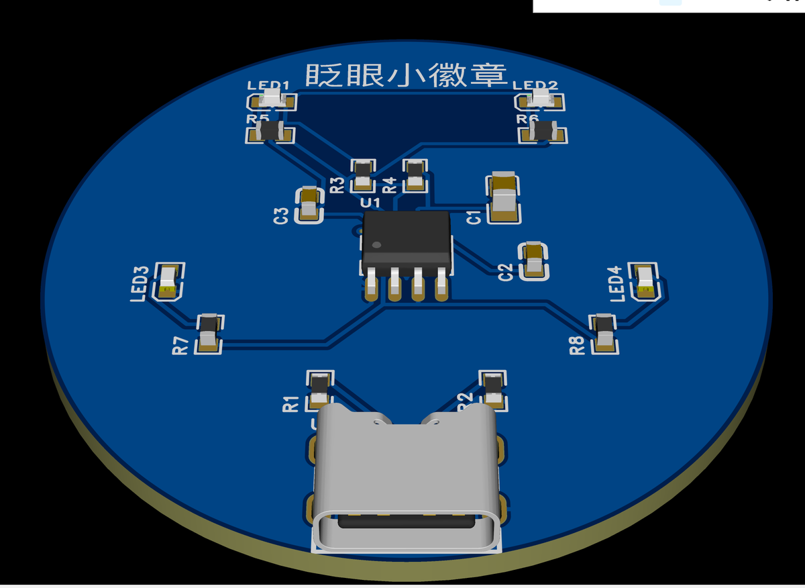
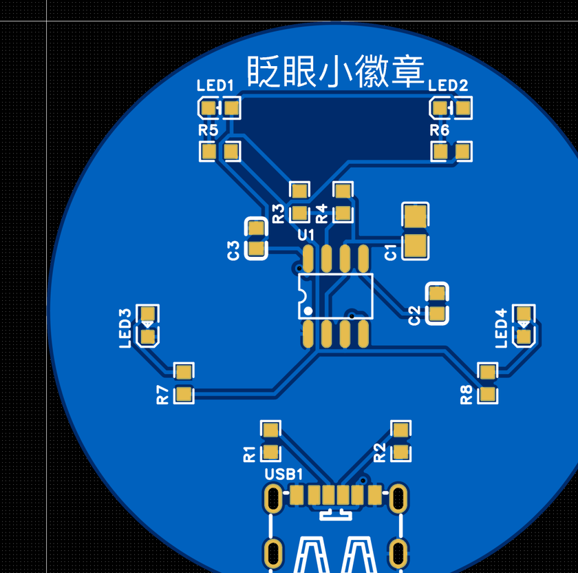

A-0 眨眼小徽章：项目介绍与原理
第一个实战作品：一块直径 40 mm 的圆形小徽章，插上 Type-C 线，上面两颗白灯和两颗红灯像眨眼一样交替闪烁。不需要编程，但会完整走一遍“新建工程 → 原理图 → PCB → 检查 → 导出 → 下单”的全部流程。

它是什么#
- 外形：圆形，直径 40 mm（比一元硬币大一圈），双面板。
- 供电：Type-C 接口，手机充电头、电脑 USB 口、充电宝都可以。
- 效果：白灯（LED1、LED2）和红灯（LED3、LED4）轮流亮，大约每秒闪 1.5 次。
- 正面丝印：「眨眼小徽章」几个字，🎨 可以换成你自己的名字、图案。
你将学会什么#
✏️
原理图
从元件库搜索并放置元件、修改属性、连导线、放电源和网络标签、运行检查并修复错误。
🧩
PCB
原理图转 PCB、认识图层、画圆形板框、布局、手动布线 + 自动布线、铺铜、写丝印文字。
🏭
生产
DRC 检查、3D 预览、导出 Gerber / BOM / 坐标文件，一键跳转嘉立创下单页面并看懂每个参数。
电路原理：一个会“打拍子”的芯片#
整个电路只有三部分：
- Type-C 供电：USB 插座把 5 V 电送进来。两个 5.1 kΩ 电阻 R1、R2 接在插座的 CC1、CC2 脚上，作用是告诉充电器“我是一个要用电的设备”——没有它们，很多 C-to-C 充电器根本不给电。
- NE555 定时芯片（U1）：一个“节拍器”。它和 R3、R4、C1 组成无稳态振荡电路，让 3 脚（OUT）在高电平和低电平之间不停地来回切换。
- 两组 LED：白灯组接成“OUT 低的时候亮”，红灯组接成“OUT 高的时候亮”，所以它们一定是你亮我灭、轮流闪。每颗 LED 串一个 330 Ω 电阻，防止电流太大烧坏。

拖动下面的滑块，看看电阻和电容怎样影响闪烁速度——徽章上的灯会实时跟着闪：
元件清单（BOM）#
下面是本案例最终下单用的元件（从编辑器导出的 BOM 整理），一共 11 种、17 个元件。“C 编号”是立创商城的商品编号，搜索时直接输入它最准确：
| 位号 | 元件 | 作用（大白话） | 封装 | C 编号 | 库类别 |
|---|---|---|---|---|---|
| USB1 | Type-C 母座 6P（仅供电） | 电源入口 | TYPE-C-6P | C456012 | 扩展库 |
| R1, R2 | 5.1 kΩ 电阻 | 告诉充电器“我要用电” | 0603 | C23186 | 基础库 |
| U1 | NE555DR | 节拍器芯片 | SOIC-8 | C7593 | 扩展库 |
| R3 | 1 kΩ 电阻 | 定时电阻 A | 0603 | C21190 | 基础库 |
| R4 | 47 kΩ 电阻 | 定时电阻 B | 0603 | C25819 | 基础库 |
| C1 | 10 µF 电容 | 定时电容（“水桶”） | 0805 | C15850 | 基础库 |
| C2 | 10 nF 电容 | 稳定 5 脚（CONT） | 0603 | C57112 | 基础库 |
| C3 | 100 nF 电容 | 芯片电源去耦（“小水缸”） | 0603 | C14663 | 基础库 |
| LED1, LED2 | 白色 LED | “眼睛” | 0603 | C2290 | 基础库 |
| LED3, LED4 | 红色 LED | “腮红” | 0603 | C2286 | 基础库 |
| R5 ~ R8 | 330 Ω 电阻 | LED 限流 | 0603 | C23138 | 基础库 |
大概要花多少钱#
| 项目 | 参考价格 | 说明 |
|---|---|---|
| PCB 光板（2 层，40 × 40 mm，5 片） | 约 ¥20 | 编辑器 DRC 面板和下单页面显示的特价都是 ¥20.00（2026-11 实测），经常有免费打样券 |
| 下单页默认勾选的“品质赔付服务” | ¥10 | 可以改成“按标准合同常规处理”省掉，见 A-10 |
| 元件 | 几元钱 | NE555 约 ¥0.66、1 kΩ 电阻约 ¥0.01 一个，大多数电阻电容都是“分”级别。具体以立创商城 / SMT 下单页的报价为准 |
| SMT 贴片（路线 ①） | 以下单页为准 | 在 PCB 订单审核通过后另外下单，费用和元件数量、是否用到扩展库有关 |
| 快递 | 下单页显示包邮选项 | 实测“顺丰电商标快”包邮 |
两条制作路线#
🤖
路线 ①：嘉立创 SMT 贴片（推荐零基础）
本案例的元件全部是小小的贴片元件（0603 只有 1.6 × 0.8 mm）。下单 PCB 后再下一个 SMT 贴片订单，工厂的机器帮你把元件焊好，收到就能插线点亮。本教程按这条路线设计。
🔥
路线 ②：自己手工焊接
想练焊接的话，0603 对新手偏难。可以在画原理图时把电阻电容换成大一些的 1206 封装（或者直插元件），NE555 用 SOP-8 / DIP-8，焊起来轻松很多。工具和方法见 A-11 与 2.13 SMT 与手工焊接。
需要准备什么#
- 一台电脑（Mac 或 Windows）+ Chrome 浏览器，已登录嘉立创EDA（0.3）
- 强烈建议一个带滚轮的鼠标（0.4）
- 大约 3~4 小时（可以分几次做，工程自动保存在云端，记得随手 ⌘S）
- 拿到板子后：一根 USB-C 线和一个充电头 / 电脑 USB 口
本案例的路线图#
| 步骤 | 做什么 | 预计用时 |
|---|---|---|
| A-1 新建工程 | 建一个叫「眨眼小徽章」的工程，认识工程树 | 5 分钟 |
| A-2 画原理图 | 搜索放置元件、连线、改属性、检查 | 60~90 分钟 |
| A-3 原理图转 PCB | 一键把原理图“搬”进 PCB | 5 分钟 |
| A-4 图层与板框 | 认识图层，画直径 40 mm 的圆形板框 | 15 分钟 |
| A-5 布局 | 把元件摆到板子上合适的位置 | 30 分钟 |
| A-6 布线 | 手动连一根线，其余交给自动布线 | 20 分钟 |
| A-7 铺铜 | 正反面铺上 GND 铜皮 | 10 分钟 |
| A-8 丝印与 Logo | 写上作品名 🎨 | 10 分钟 |
| A-9 检查与预览 | DRC、3D 预览 | 10 分钟 |
| A-10 导出与下单 | Gerber、BOM、坐标文件，看懂下单页 | 20 分钟 |
| A-11 拿到板子之后 | 上电测试、排错、改进 | — |

想让小徽章闪得更慢一些，下面哪种改法是对的？
✅ 电容越大，“水桶”越大，灌满再放空要的时间越长，闪得越慢。R5~R8 是 LED 的限流电阻，改它们只会让灯变暗或变亮，不影响闪烁速度。可以回到上面的模拟器里验证一下。